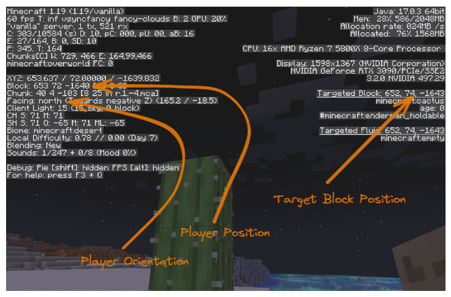
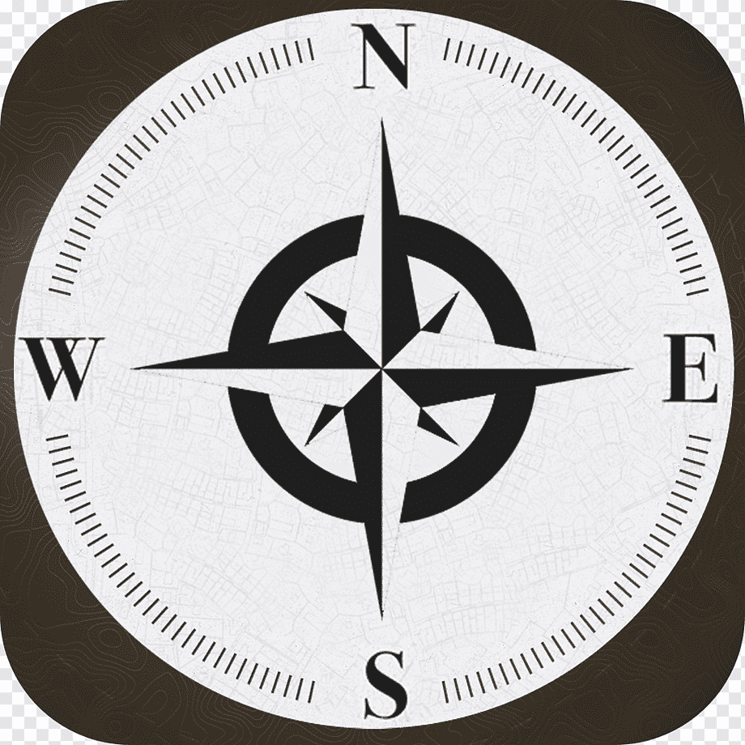

02 Orientation
In this tutorial We will just learn some of the background concepts needed to write code to do things in Minecraft. We will then use a couple of Python commands to get warmed up.
Get a Minecraft Server Running
Make sure we are in the right folder and have the Environment activated:
cd $HOME/my_world
source .venv/bin/activate
To start the default server, run the following command:
mciwb start
You should see the following output:
INFO: Launching existing Minecraft server in /home/giles/mciwb_server
INFO: Launching Minecraft Server 'mciwb_server' on port 20101 ...
INFO: waiting for server to come online ...
INFO: Server mciwb_server is online on port 20101
If this does not work take a look in Minecraft Server wont start.
Connect your Client to the Server
Now you are ready to connect your client to the server. Go back to the Minecraft client that we started in Tutorial 01 or relaunch “Minecraft Launcher” it from the start menu.
Make sure “Minecraft Java Edition” is selected on the left and click “Play”.
Now choose the “Multiplayer” option and click “Add Server”. You will see a screen like this:
{kind=link}
You can make the Server Name whatever you like. The Server Address must be:
localhost:20101
Click “Done”, select your new Server and click “Join Server”.
Your player should appear in the new world on a desert next to an ocean filled with beautiful corals. I chose this starting location as it is relatively flat and a good place to try some programming ideas, yet has quite nice scenery.
If you have not played Minecraft before then take some time to familiarize
yourself with the controls and game play. You may find
this wiki
useful if you are a beginner. When you are really to move on type the
command /kill to return to the spawn point.
Connect MCIWB to the Server
Now you are ready to connect MCIWB to the same server that your player is inside. It is probably best at this point to arrange the windows on your screen so that you can see both Minecraft and VSCode.
Simply type this command at the terminal prompt in VSCode, replace <player_name> with your player’s name:
mciwb shell --player <player_name>
You should see output like this:
INFO: Connected to localhost on 20100
INFO: Monitoring player TransformerScorn enabled for sign commands
INFO: ######### Starting Interactive Session ##########
Python 3.9.5 (default, Nov 23 2021, 15:27:38)
Type 'copyright', 'credits' or 'license' for more information
IPython 8.4.0 -- An enhanced Interactive Python. Type '?' for help.
In [1]:
The prompt at the end is the Python Interactive Shell. In a moment we will start to type some Python commands at this prompt.
You should see only the INFO: outputs shown above. If you see ERROR: or WARNING: then take a look at Minecraft Server wont start. If that does not help then please create a new issue at https://github.com/gilesknap/mciwb/issues and someone will get back to you.
Try out Some Action Signs
One feature of MCIWB is that it allows you to set up action signs. These are signs that your player can place in the world and they will call some Python code and tell the code which block they are attached to.
MCIWB comes pre-configured with some action signs that let you cut and paste volumes of blocks. When you told MCIWB to interact with your player it automatically gives one of each of the currently configure action signs.
You can also create your own action signs and we will do this in a later tutorial.
For now we shall try out the copy and paste signs to have a go at flattening an area around the spawn point, ready for us to do some building with Python code.
To use the signs:
Place a
selectsign at two opposite corners of a volume of blocks. This selects the volume for copying.Place a
pastesign at the point you would like to paste a copy of the volumeNote that the last select is the ‘anchor’, it is corner of your volume that will be placed at the paste point
Place a
clearsign anywhere to clear out the current selected volume
The above video is a demo of flattening out the area around the spawn point using copy, paste and clear.
Learn about Coordinates and Cardinals
To get into programming blocks in the Minecraft world you will need to understand how to refer to a particular block in the world.
For help in understanding this lets turn on some diagnostic information in the Minecraft client by hitting the F3 key. You will see panels of text on the left an right.
In the picture below we have picked out the information regarding player’s position and which direction they are facing, plus the target block position.
{kind=link}
Cardinals
The cardinal directions are North East South and West. They are used on maps in the real world where North is the direction that a magnetic compass points.
Minecraft uses the same cardinal directions, you can see in the picture above that the player is facing North. In the MCIWB world North is facing along the shore with the sea to your right. Its useful to keep in mind the arrangement of the cardinals which is as follows:
{kind=link}
From the above you can see that facing North means that:
moving to the right is traveling East
moving to the left is traveling West
moving forward is traveling North
moving backward is traveling South
Generally, when describing things we will usually face North because it is easy to relate the directions back to the above picture.
Coordinates
Coordinates are a set of 3 numbers named: X, Y, Z that represent a position in the world. In Minecraft they represent the position of a block (even if that block contains air!).
The previous Minecraft Diagnostics picture shows the player’s position As 653 72 -1640. This is shorthand for X=653, Y=72, Z=-1640. Strictly speaking it is the position of the player’s feet as a player is 2 blocks tall.
There is a direct relationship between the Cardinals and the coordinate system as follows:
Moving East increases your X coordinate, so West decreases X
Moving Up increases your Y coordinate, so Down decreases Y
Moving South increases your Z coordinate, so North decreases Z
The minecraft Wiki has a useful diagram of the coordinate system, see https://minecraft.fandom.com/wiki/Coordinates.
If you consider the coordinate X=0, Y=0, Z=0 to be the centre of the world then our player’s position is 653 blocks to the East of the centre, 72 blocks above the centre and 1640 blocks North the centre. Note that the Z coordinate is negative because it is North of the centre and moving North decreases the Z coordinate.
Also note the coordinates of the target block are 653 74 -1643. The target block is the block that the player is looking at and is highlighted with a black outline (it is the block you will hit if you click left button).
If we subtract the player’s position from the target block’s position we get X=0, Y=2, Z=-3. This tells us that the target block is 2 blocks above the player and 3 blocks to the North of the player. Don’t worry!, we won’t have to do any math like that because Python will do it all for us.
Using Coordinates in Python
In Python we have a class called Vec3 to represent a set of Coordinates.
Note
A class is just a type of thing that Python can understand. We will go into detail on the meaning of class in a later tutorial.
You can create a Vec3 by typing at the Python prompt for example this is the Vec3 representing my Player’s position:
Vec3(653, 72, -1640)
TODO: show get_block and player.pos
Command Completion in Interactive Python
TODO show set_block and Item and Direction.Down (to get block beneath the player)